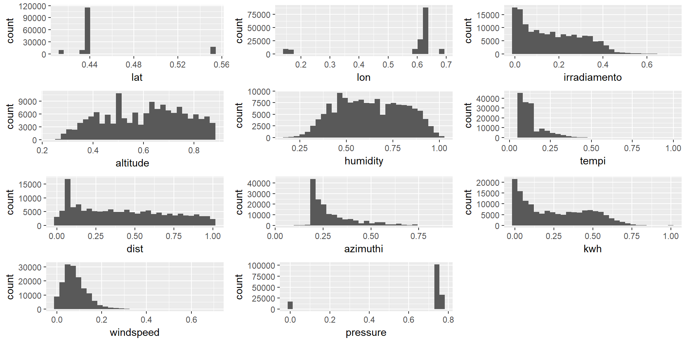
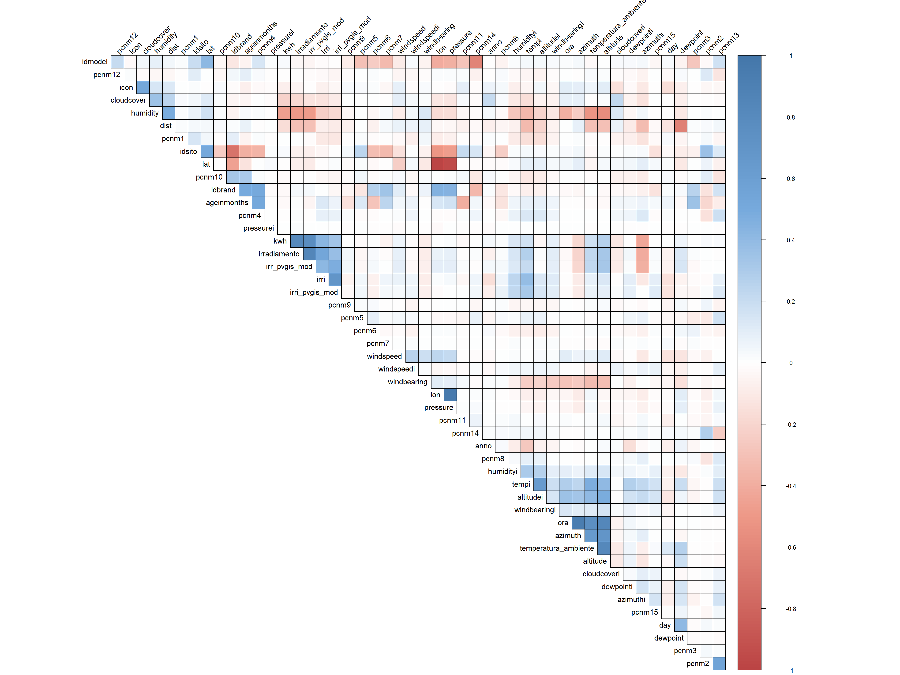

Poniższy raport ma na celu podjęcie analizy danych pochodzących z czujników umieszczonych przy panelach fotowoltaicznych. Dane zawierają informacje godzinowe z pojedynczej jednostki wytwarzającej eneregie elektryczną ze światła słonecznego. Zbór danych zawiera róWnież informacje pogodowe oraz geograficzne. Kolumny dla których wartość korelacji była nieznaczna zostały pominęte przy analizie. Atrybuty kwh oraz irradiamento zostały uzupełnione miesięcznymi wartościami średnimi w poszczegónych godzinach. Opis analizowanych danych został umieszczony w pliku codebook.
library(ggplot2)
library(dplyr)
library(corrplot)
library(gridExtra)
library(plotly)
library(caret)df <- read.csv("elektrownie.csv", row.names=1)
df<- df %>% mutate(month= format(as.POSIXct(data, format='%m/%d/%Y %H:%M'), "%Y-%m"))
df <- df %>% mutate(hour= as.numeric(format(as.POSIXct(data, format='%m/%d/%Y %H:%M'), "%H")))meanIrr<-df%>%filter(irradiamento != 0) %>% group_by(month,hour)%>%summarise(mean=mean(irradiamento))
meanKWH<-df%>%filter(kwh != 0) %>% group_by(month, hour)%>%summarise(mean=mean(kwh))
df <- df %>% mutate(irradiamento = ifelse(irradiamento != 0,irradiamento, as.numeric(meanIrr[meanIrr$hour == hour & meanIrr$month == month,]$mean))) %>% filter(!is.na(irradiamento))
df <- df %>% mutate(kwh = ifelse(kwh != 0, kwh, as.numeric(meanKWH[meanKWH$hour == hour & meanKWH$month == month,]$mean))) %>% filter(!is.na(kwh))set.seed(23)W analizowanym zbiorze znajduje sie 151662 wierszy i 52 kolumn. Poniżej znajduje się podsumowanie wybranych kolumn.
summary(select(df,data,lat,lon,irradiamento,altitude,humidity,tempi,irri,kwh,dist,azimuthi,windspeed,pressure ))## data lat lon
## 1/1/2013 10:00: 17 Min. :0.4150 Min. :0.1540
## 1/1/2013 11:00: 17 1st Qu.:0.4370 1st Qu.:0.6200
## 1/1/2013 12:00: 17 Median :0.4370 Median :0.6240
## 1/1/2013 13:00: 17 Mean :0.4488 Mean :0.5738
## 1/1/2013 14:00: 17 3rd Qu.:0.4390 3rd Qu.:0.6300
## 1/1/2013 7:00 : 17 Max. :0.5530 Max. :0.6910
## (Other) :151560
## irradiamento altitude humidity tempi
## Min. :0.0010 Min. :0.2510 Min. :0.1600 Min. :0.0310
## 1st Qu.:0.0420 1st Qu.:0.4800 1st Qu.:0.4800 1st Qu.:0.0730
## Median :0.1490 Median :0.6230 Median :0.6300 Median :0.1130
## Mean :0.1689 Mean :0.6036 Mean :0.6307 Mean :0.1322
## 3rd Qu.:0.2750 3rd Qu.:0.7340 3rd Qu.:0.7800 3rd Qu.:0.1420
## Max. :0.7100 Max. :0.8840 Max. :1.0000 Max. :0.9830
##
## irri kwh dist azimuthi
## Min. :0.1080 Min. :0.0010 Min. :0.0000 Min. :0.0460
## 1st Qu.:0.2160 1st Qu.:0.0530 1st Qu.:0.1530 1st Qu.:0.2070
## Median :0.2180 Median :0.2180 Median :0.3880 Median :0.2480
## Mean :0.2232 Mean :0.2561 Mean :0.4220 Mean :0.2939
## 3rd Qu.:0.2230 3rd Qu.:0.4410 3rd Qu.:0.6557 3rd Qu.:0.3380
## Max. :1.0000 Max. :1.0000 Max. :1.0000 Max. :0.8600
##
## windspeed pressure
## Min. :0.00000 Min. :0.0000
## 1st Qu.:0.04600 1st Qu.:0.7490
## Median :0.07200 Median :0.7530
## Mean :0.08097 Mean :0.6682
## 3rd Qu.:0.10900 3rd Qu.:0.7550
## Max. :0.69600 Max. :0.7690
## przyklady<-select(df,lat,lon,irradiamento,altitude,humidity,tempi,dist,azimuthi,kwh,windspeed,pressure)
a <- list()
for (col in colnames(przyklady)) {
a[[col]] <-((ggplot(przyklady) +
aes_string(x=col) +
geom_histogram(bins = 30)))
}
do.call("grid.arrange",c(a, ncol = 3))
cor <- cor(df %>% select(-data, -month, -hour),use="complete.obs")
col <- colorRampPalette(c("#BB4444", "#EE9988", "#FFFFFF", "#77AADD", "#4477AA"))
corrplot(cor,type="upper",order="hclust", tl.col = "black", method = "color",col=col(200), addgrid.col = "black", diag=FALSE, tl.srt = 45)
Z wykresu można odczytać że istnieje dodatnia wartośc korelacji pomiędzy między parametrami kwh oraz irrdiamento, co wynika z zasady działania paneli fotowoltaicznych. Istnienie dodatniej wartość korelacji między godziną a azymutem jest spowodowanem faktem, że kąt azymutu rośnie wraz z godziną.
wykres <- df %>% group_by(idsito,anno,month) %>% summarise(kwh = sum(kwh))
ggplotwykres <- ggplot(data = wykres, aes(month,kwh, color=factor(idsito))) +
geom_point()+
labs(y="kWh") +
labs(x="miesiąc")+
labs("Interaktywny wykres")
ggplotly(ggplotwykres,dynamicTicks = TRUE,width = NULL, height = NULL)rdf<-df%>% select(idsito, irradiamento, altitude,humidity,tempi, temperatura_ambiente
,cloudcover,irri,dist,azimuthi,pressure,windspeed
, kwh)
inTraining <- createDataPartition(y = rdf$idsito, p = .75, list = FALSE)
training <- rdf[inTraining, ]
testing <- rdf[-inTraining, ]
ctrl <- trainControl(method = "repeatedcv", number = 2,repeats = 5)
fitLm <- train(kwh ~ .,
data = training,
method = "lm",
metric = "RMSE",
trControl = ctrl)
lmPredict<-predict(fitLm, newdata=testing)
postResample(lmPredict,testing$kwh)## RMSE Rsquared MAE
## 0.11389029 0.71120813 0.08011235fitLm %>% summary()##
## Call:
## lm(formula = .outcome ~ ., data = dat)
##
## Residuals:
## Min 1Q Median 3Q Max
## -0.66748 -0.05539 -0.00382 0.05448 1.10517
##
## Coefficients:
## Estimate Std. Error t value Pr(>|t|)
## (Intercept) 0.270755 0.007441 36.388 < 2e-16 ***
## idsito 0.088829 0.002972 29.887 < 2e-16 ***
## irradiamento 1.186171 0.004142 286.343 < 2e-16 ***
## altitude -0.031899 0.004097 -7.785 7.01e-15 ***
## humidity -0.185490 0.002958 -62.715 < 2e-16 ***
## tempi -0.124724 0.006369 -19.584 < 2e-16 ***
## temperatura_ambiente -0.013735 0.003515 -3.907 9.35e-05 ***
## cloudcover -0.064500 0.001553 -41.544 < 2e-16 ***
## irri 0.044400 0.030774 1.443 0.149
## dist 0.070526 0.001586 44.473 < 2e-16 ***
## azimuthi -0.180312 0.004183 -43.105 < 2e-16 ***
## pressure -0.052480 0.001695 -30.961 < 2e-16 ***
## windspeed -0.046607 0.006957 -6.699 2.10e-11 ***
## ---
## Signif. codes: 0 '***' 0.001 '**' 0.01 '*' 0.05 '.' 0.1 ' ' 1
##
## Residual standard error: 0.1145 on 113735 degrees of freedom
## Multiple R-squared: 0.709, Adjusted R-squared: 0.709
## F-statistic: 2.309e+04 on 12 and 113735 DF, p-value: < 2.2e-16Według powyższych wyników największy wpływ na ilość wytwarzanej energi przez panele fotowoltaiczne ma nasłonecznienie, natomiast najgorszy wilgotność. Znacząco negatywny wpływ mają również zachmurzenie, azymut i ciśnienie atmosferyczne.